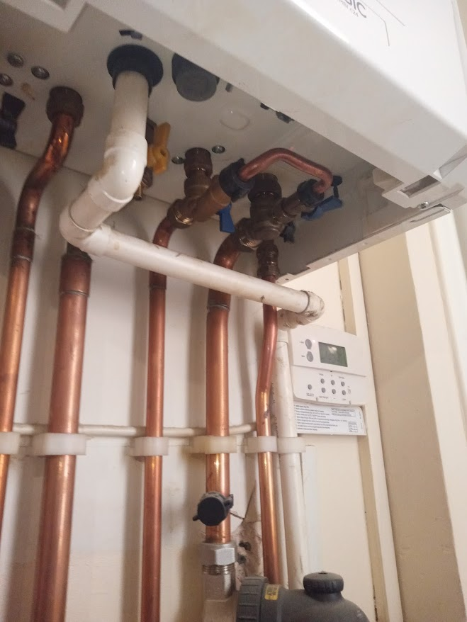

Local plumber in West Kensington, W14
Plumbing repairs, small jobs and replacements carried out directly by an experienced W14 plumber across West Kensington and nearby West London.

Everyday plumbing, urgent repairs and replacements
Clear service pages help you quickly find the right kind of plumbing support, from a leaking toilet or tap to pipework, pumps and landlord maintenance.
Small plumbing jobs
Taps, toilets, valves, wastes, overflows and the jobs larger companies often avoid.
View serviceToilet repairs
Running cisterns, flush faults, leaks, fill valves and complete WC replacement.
View serviceTap replacement
Kitchen mixers, basin taps, bath taps, cartridges and leaking connections.
View serviceLeaks & pipework
Active leaks, failed fittings, wastes, connectors and accessible pipe repairs.
View serviceRadiators & pumps
Radiator valves, shower pumps, tanks, cylinders and stored-water plumbing.
View serviceLandlords & businesses
Direct plumbing support for rental properties, shops, pubs and small portfolios.
View service
A plumber who knows West London properties
Older conversions, mansion blocks, terraces and compact flats often need careful fault-finding—not rushed guesswork.
- Practical diagnosis before unnecessary replacement
- Respectful work in occupied homes and communal buildings
- Clear communication with homeowners, tenants and property managers
- Small plumbing jobs treated as proper jobs
Local reviews that build trust
These concise highlights reflect customer feedback associated with the Kensington Plumbing Services profile. Read the profile for the full reviews.
Same-day response, punctual arrival and a professional, effective repair.
Anthony F · customer reviewTrusted across a 12-property portfolio for knowledgeable, tidy and dependable plumbing work.
Jamie O · property manager reviewA small leak in a flat was located and repaired on the same day.
Victoria H · customer reviewPlumber across Kensington and nearby West London
Our strongest local focus is W14, with plumbing appointments across the neighbouring areas we know well.
Send a photograph and a short description of the problem.
WhatsApp is often the quickest way to show us the fitting, leak or fault. For urgent problems, call directly for current availability.